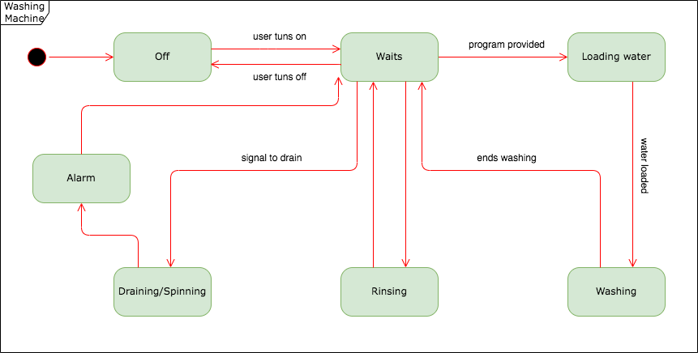

UML
Summary post on the article by Padhy et al. (2018), State-of-the-Art Object-Oriented Metrics and Its Reusability: A Decade Review
After posting my initial thoughts about the ranking presented by Padhy et al. (2018) and reading the feedback provided by fellow students, one thing is almost inevitable: the relative element when deciding which asset should take priority. As mentioned in my first post, in the real world, a team's projects can be very similar, similar or different. So the criteria I took to create my ranking were based on usability, of course, but also on the assets present across the Software development life cycle. Moreover on, how much will these assets affect each stage?
Reducing maintenance costs and saving time are essential tasks (Padhy et al., 2018). If this is an important aim, although an asset can be reusable, the question is how reusable it is to justify its use against starting from scratch.
An important question asked by a fellow student was why Arquitecture-driven approach had a low rating on my list. Architectural patterns define the structure of the whole project. However, the question was, how many of those architectural patterns were created to support the development of specific features? This condition inevitably takes us back to the relativity of the project.
References
Padhy, N., Satapathy, S., & Singh, R.P. (2018) 'State-of-the-Art Object-Oriented Metrics and Its
Reusability: A Decade Review', in: Satapathy S., Bhateja V., Das S. (eds) Smart Computing and
Informatics. Smart Innovation, Systems and Technologies. 77. Springer.
Discuss which UML models are most applicable at different stages of the Software Development Life Cycle.
Defining the software development (SDLC) life cycle as analysis, design, development, testing, and maintenance, I consider the following UML diagrams as beeing the most applicables to different stages of the SDLC.
The use case diagrams will be most used in the Analysis and Testing. In the analysis to understand the actions the system's actors are involved in and in testing because it will provide test cases to this stage.
The class diagram will be helpful in the design as this provides a static view of the participant classes and their objects. Before the development, it is necessary to know the list of relevant classes and how they relate. It also provides the list of operations performed on the classes.
The state diagram shows the states of an object, and therefore is more important to implement it during the design and after the class diagram. It is also essential to find the events that trigger the changes in the state of the system or object due to external actions.
Sequence diagrams are used in design and development as they present the messages sent between objects based on time.
States diagram of a washing machine.
Making reference to ‘The Unified Modeling Language Reference Manual Second Edition’, use the State Machine Diagram in Figure 3-7 to design a similar model for a washing machine.
